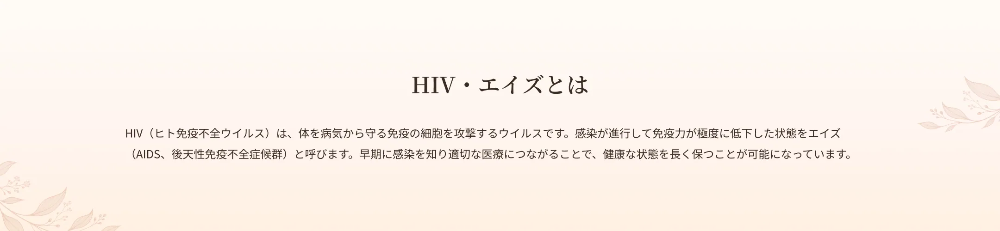
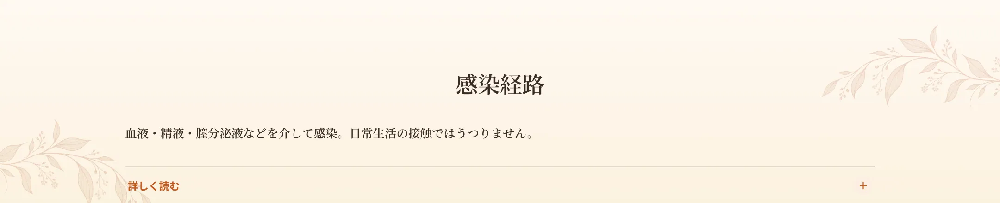
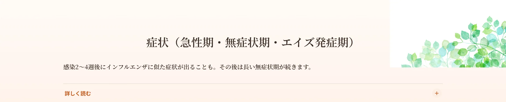
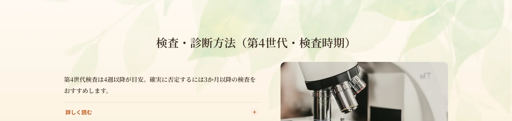
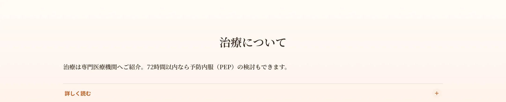
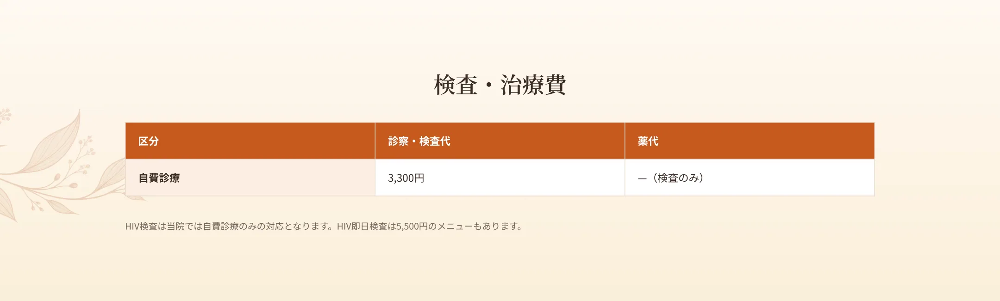
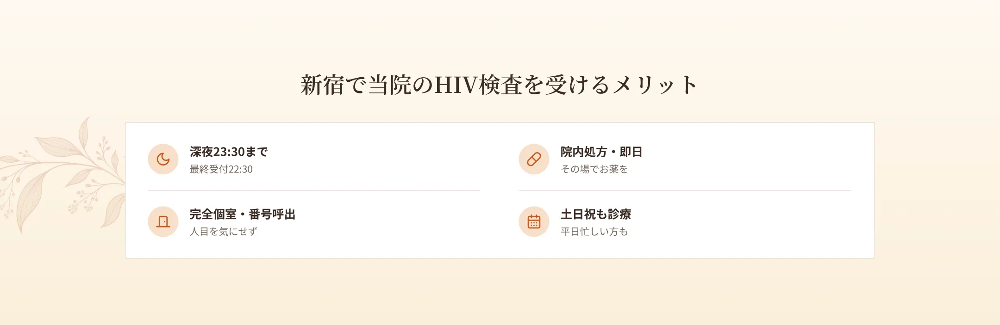
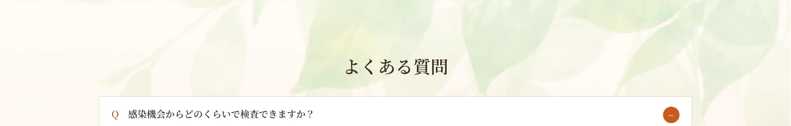

新宿駅から徒歩6分、エイチクリニック新宿では、HIVの検査を即日・匿名で行っています。HIVは早期に発見して適切に対応することが大切な感染症です。当院では第4世代の抗原抗体検査を用い、感染機会から一定期間が経っていれば即日で結果をお伝えできます。完全個室・呼び出し番号制で、深夜23時30分まで・土日祝も受診可能。「不安な機会があった」「念のため調べておきたい」という方は、人目を気にせず受診できる当院にご相談ください。


HIVは、感染者の血液・精液・膣分泌液などの体液、母乳を介して感染します。主な感染経路は性行為、注射器具の共用、母子感染です。日常生活の接触（握手・食器の共用・入浴など）で感染することはありません。

感染後2〜4週間で、発熱・喉の痛み・リンパ節の腫れ・筋肉痛・発疹など、インフルエンザに似た症状が出ることがあります（急性期）。これらは数週間で改善し、その後は自覚症状のない無症状期が数年〜10年以上続くことがあります。この間もウイルスは増殖を続け、免疫細胞を徐々に破壊します。免疫力が大きく低下すると、健康な人では問題にならない感染症（日和見感染）などを発症しやすくなります。

当院ではHIVの即日検査（第4世代の抗原抗体検査）に対応しています。第4世代検査は、感染機会からおおむね4週間以上経過していれば結果の評価に使いやすくなります。ただし、確実に感染を否定するためには、厚生労働省のガイドラインに沿って3か月（90日）以上経過後の検査をおすすめします。ごくまれに偽陽性（実際は感染していないのに陽性と出ること）が出ることがあり、その場合は確認検査が必要です。感染初期はスクリーニングで陰性となることがあるため、心配な時期や日数についてもご相談ください。結果は短時間で判明します。

HIVの治療は、専門の医療機関での継続的な加療が必要です。当院は検査を中心に対応し、確認検査や治療が必要な場合は、専門の医療機関へのご紹介を行います。なお、感染リスクのある機会から72時間以内の場合は、感染の可能性を下げる予防内服（PEP）が検討されることがあります。迷う場合は時間を空けずにご相談ください。



A.第4世代検査は4週以降が目安です。確実な確認には3か月後の検査を推奨します。
A.即日検査に対応しています。確認検査が必要な場合は数日かかります。
A.匿名での検査が可能です。
A.確認検査のうえ、専門の医療機関をご紹介します。
A.深夜23:30まで（最終受付22:30）対応しています。